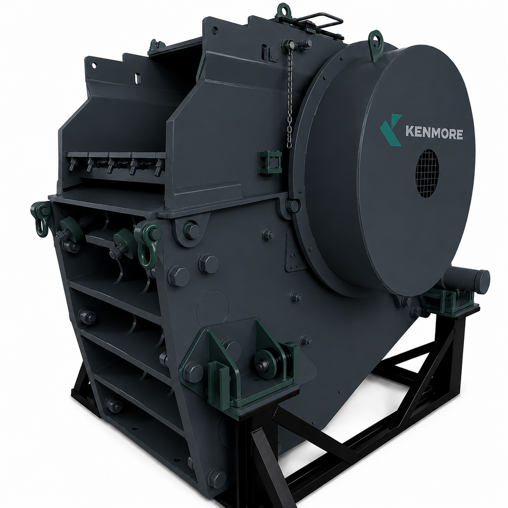

01 / Crushers
Jaw Crushers
A modular, weld-free frame structure built for the toughest African ores — abrasive, hard and high-moisture. Cast steel components and premium spherical roller bearings deliver high fatigue resistance and a long, reliable service life across primary and secondary duty.
- Feed opening
- from 800×510 mm to 2,000×1,500 mm
- Power
- from 75 kW to 400 kW
- Max. capacity
- from 65 t/h to 1,460 t/h
- Application
- Primary, secondary
